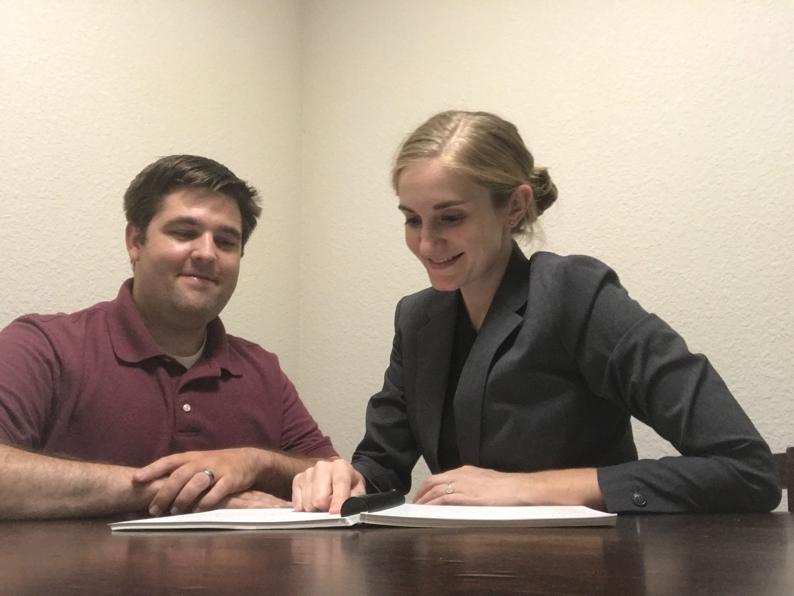

Individualized Nutrition Counseling
 Individualized nutrition counseling sessions are one-on-one appointments either in-person or online. Sessions are tailored based on individual needs and nutritional/health concerns. Topics can range from general healthy eating to weight management to diabetes management. An online health assessment and questionnaire will need to be completed before the initial appointment. Initial appointments last about 1 hour. Follow-up appointments last from 30-45 minutes.
Prices range from $75-125 per appointment. Contact Avarie Olsen RD CD for details and to schedule your appointment today.